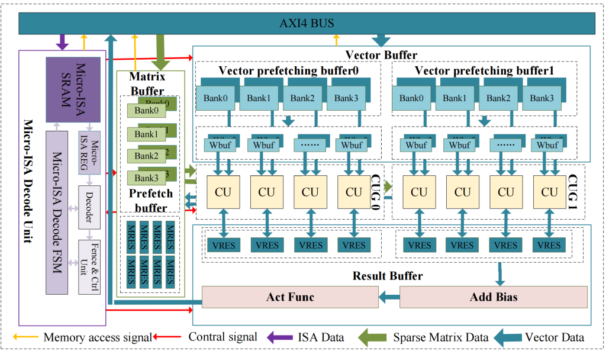

（一）高效能智能加速器体系结构
一种多维并行训练的自动化生成与优化技术
为提升深度学习模型的计算性能，稀疏神经网络模型被应用于很多领域。非结构化稀疏剪枝可有效开发模型的稀疏度，显著降低深度神经网络模型的计算量和参数量。但由于非结构化稀疏神经网络模型的不规则性，其在通用计算平台（如CPU和GPU等上）上的运行效率不高。因此需设计专用的稀疏加速器，才能得到较好的执行效率。

图1：数据流融合稀疏神经网络加速器架构DF-SNNA
项目研究提出了一种数据流融合稀疏神经网络加速器DF-SNNA，一种专为稀疏深度神经网络优化的智能加速器体系结构。首先，为提升稀疏神经网络中非规则计算的数据复用与计算效率，设计构建了一个融合内积与列积的无阻塞计算单元。该单元由数据分发网络、一维乘法阵列、点积归约网络、部分和重组织单元以及子矩阵间累加单元组成，各模块以流水线方式并行执行，可支持任意稀疏度的稀疏神经网络。为进一步提高计算效率，DF-SNNA将权重矩阵划分为细长的矩形子矩阵，并把矩阵乘法或卷积运算分解为子矩阵与子向量的乘法，从而充分发挥列的优势。该计算单元能够最大化流水线负载，降低启动开销，在高稀疏度模型下显著提升计算效率。其次，为获得较好的并行度、灵活性与可扩展性，DF-SNNA采用外积数据流构建计算单元阵列：将多个计算单元组成一个计算单元组，并在加速器内布置多个计算单元组，从而形成三级并行结构。该设计的一个优势是卷积特征图可在窗口级和子图级进行划分：同一计算单元组内的不同计算单元处理一个子图的不同窗口，而不同计算单元组则处理不同的子图。该方案在优化计算效率与并行度的同时，也简化了卷积与矩阵乘法的任务划分与调度。随后，我们实现了相应的片上缓存结构，支持多行并发访存以及 img2col 操作。最后，为提升加速器的适应性，项目研究提出了一套宏指令集与微内核方案，并通过优化宏指令发射策略进一步提升计算效率。评估结果表明，在非结构化稀疏深度神经网络模型上，DF-SNNA相比现有的稀疏矩阵乘法加速器，可将计算效率平均提升 1.29–2.38 倍；其整体性能亦优于现有稀疏神经网络加速器 1.03–1.83 倍。此外，DF-SNNA具备出色的可扩展性，扩展效率超过 80%。
相关部分论文列表:
- Rui Xu, Sheng Ma, Yaohua Wang, Yang Guo, Dongsheng Li, Yuran Qiao. Heterogeneous Systolic Array Architecture for Compact CNNs Hardware Accelerators. IEEE TPDS 2021.